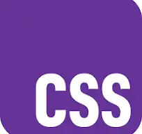
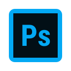
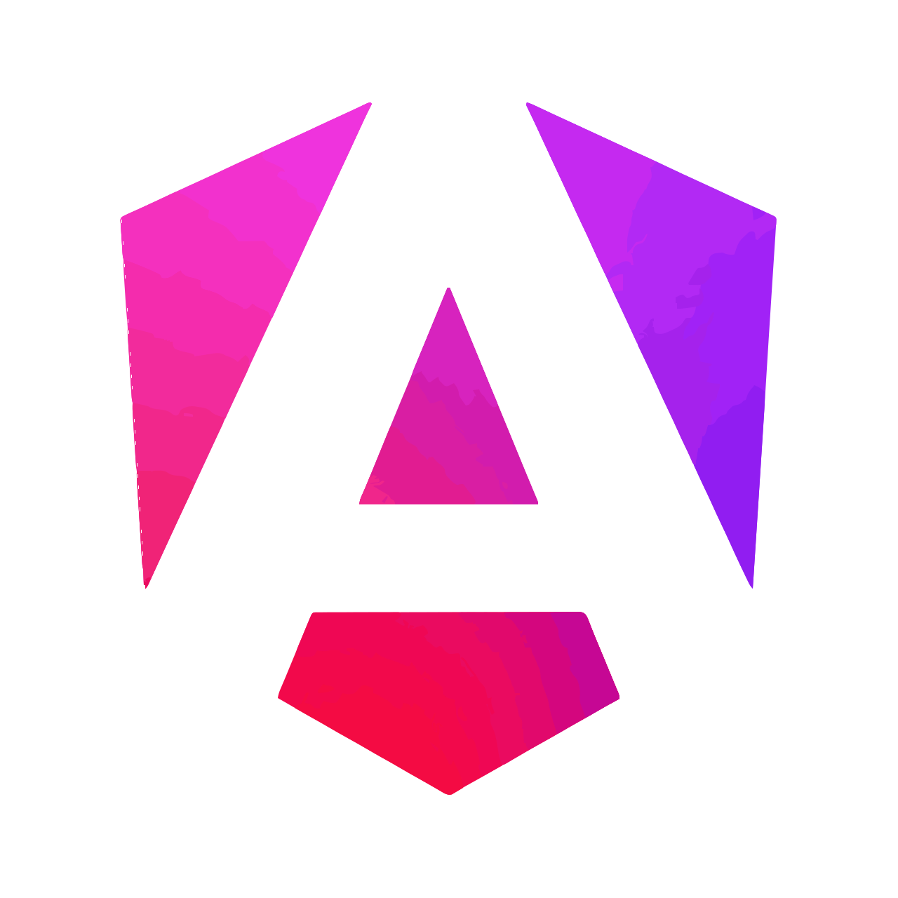
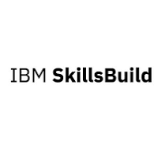

Stack
HTML5

CSS3
JavaScript
Git
GitHub
VS Code
WordPress
Figma

Photoshop
Illustrator
Prestashop
ChatGPT
React

Soy Alexandra Ferrera Arenas, desarrolladora web y diseñadora UI/UX.
Especializada en la creación de sitios web y ecommerce con CMS como WordPress y
PrestaShop. Utilizo mi base técnica en HTML, CSS y JavaScript para personalizar y
optimizar cada proyecto más allá de los constructores visuales.
💼 Cuento con experiencia sólida en auditoría técnica, rendimiento y SEO,
además de gestionar el ciclo de vida completo de un proyecto: desde el lanzamiento y mantenimiento hasta
la creación de contenido y apoyo en campañas. Domino herramientas como Photoshop e
Illustrator, asegurando una armonía total entre funcionalidad y recursos gráficos.
🎨 Mi trayectoria como artista plástica aporta una sensibilidad única al diseño
de interfaces y a la toma de decisiones UX. Gestionar mi propia marca personal, con
presencia en web y redes sociales,
me permite entender las necesidades reales de comunicación y negocio de mis clientes.
💡 Me apasiona la fusión entre técnica y estética: crear experiencias digitales que no solo sean
atractivas, sino eficientes, coherentes y centradas en el usuario.
🚀 Actualmente trabajo como freelance en desarrollo y mantenimiento web,
mientras busco integrarme en un equipo profesional donde aportar mi visión proactiva y
seguir creciendo.
Una selección de proyectos profesionales, personales y de formación en los que combino
desarrollo web, diseño y experiencia de usuario. Incluye proyectos reales en producción, e-commerce,
diseño UX/UI y desarrollo frontend.
Cada proyecto refleja mi forma de trabajar: enfoque en el usuario, atención al detalle y soluciones
funcionales orientadas a resultados.
Proyecto profesional de e-commerce para una tienda online de referencia en su sector.
Fui responsable de la creación completa de la nueva web desde cero,
abarcando diseño, estructura, experiencia de usuario y lanzamiento.
Aplicación móvil diseñada bajo la metodología del curso Google UX Design, enfocada en
optimizar la
reserva de entradas para cines locales, consultar la cartelera, ver tráilers, buscar
películas y acceder a promociones exclusivas. El proyecto abarca desde la
investigacion de usuarios,
wireframing,
prototipos de alta fidelidad y pruebas de usabilidad,
logrando
una interfaz intuitiva que prioriza la conversión y la accesibilidad.
Proyecto que cubre todo el proceso de diseño UX, desde la
investigación de usuarios hasta la
creación de prototipos de alta fidelidad, pruebas de usabilidad y el
desarrollo de un
sistema de diseño propio con componentes escalables y autolayouts
optimizados.
Plataforma profesional para la gestión de marca personal y exhibición
artística. Desarrollada
en WordPress, integra galerías dinámicas y un blog optimizado para la comunicación visual.
Es un proyecto vivo donde aplico mis conocimientos de diseño y mantenimiento
web para
garantizar una experiencia estética coherente con mi obra plástica.
Las Playas de Cádiz es un proyecto de diseño y desarrollo front-end creado desde cero,
enfocado en ofrecer una experiencia visual cuidada y una navegación intuitiva para descubrir
las playas más emblemáticas de la provincia de Cádiz.
Rediseño y desarrollo integral del sitio web realizado en entorno de
agencia, abordando la arquitectura de la información, la mejora de la
navegación y un diseño
responsive sólido orientado a la experiencia de usuario. El proyecto fue validado y
publicado con éxito, alineado con los objetivos visuales y funcionales del
cliente.
Repositorios donde exploro y documento soluciones con diferentes tecnologías. Incluyen
proyectos desarrollados desde cero (como este propio portfolio), demostrando
mi capacidad para implementar arquitecturas limpias, control de versiones con Git y
despliegues eficientes.
Tienda online 'Tubesan' – Desarrollo Web, UX y SEO
El proyecto incluyó la migración desde la web anterior,
optimización SEO inicial y posterior, configuración y seguimiento en
Google Search Console y Google Merchant,
así como apoyo en campañas de Google Ads.
Se trata de un proyecto real, en producción, orientado a rendimiento,
posicionamiento y conversión, actualmente activo y referente en su sector.
WordPress
Elementor
WooCommerce
Google Search Console
Google Ads
App móvil 'CineMax' – Diseño UI/UX
Figma
Photoshop
App móvil 'Red Vecinal Jerez' – Diseño UI/UX
Esta idea sería relevante en la ciudad ya que promueve la participación ciudadana y
el
civismo a
través de una app intuitiva y accesible. Permite reportar incidencias, impulsar
propuestas
comunitarias y acceder a información clave del municipio.
Figma
Photoshop
Web 'Alexandra Ferrera De Arte'
Wordpress
Divi
CSS
Photoshop
Web 'Playas de Cádiz'
El proyecto abarca desde la conceptualización y el diseño de la interfaz hasta la
implementación completa del sitio, priorizando la claridad de la información, el rendimiento
y la experiencia de usuario en dispositivos móviles y escritorio.
Durante el desarrollo se ha utilizado un enfoque basado en componentes y el apoyo de
herramientas de inteligencia artificial como asistente, manteniendo siempre el control sobre
la arquitectura, el diseño y las decisiones finales.
HTML
CSS
Typescript
React
Vite
Git
IA
Photoshop
Web 'Farmacia Morillo Conil' – Diseño y Desarrollo Web
Wordpress
Divi
Photoshop
Ejercicios y Proyectos Prácticos (GitHub)
HTML
CSS
JavaScript
Bootstrap
React
Angular
TypeScript
Astro
Git
Python



Impartido por: Victor robles Udemy
Horas Lectivas: 100
Cursando actualmente (2025)
Una formación integral que me va a permitir dominar las bases modernas de JavaScript (ES6+), aplicar frameworks como Angular, construir servidores y API con Node.js, y crear sitios rápidos y optimizados con Astro. Esta combinación me está dotando de versatilidad para diseñar front-ends interactivos, respaldados por un backend eficiente, y con rendimiento y SEO en mente.
Impartido por: Coursera
Horas Lectivas: 300
Año de obtención: 2025
Esta formación, diseñada por Google y de gran prestigio internacional, se trata de un programa compuesto por 7 cursos online, con cientos de actividades y evaluaciones basadas en la práctica que simulan escenarios reales de diseño UX y son fundamentales para el éxito en el lugar de trabajo.
🟢 Aspectos básicos del diseño de la experiencia del usuario.
🟢 Primeros pasos en el proceso de diseño de UX: Empatizar, definir e idear.
🟢 Crear esquemas de página y prototipos de baja fidelidad.
🟢 Llevar a cabo investigaciones en UX.
🟢 Crear prototipos y diseños de alta fidelidad en Figma.
🟢 Crea interfaces de usuario (IU) dinámicas para sitios web.
🟢 Diseñar una experiencia del usuario de una iniciativa de interés público y
prepararse
para
el trabajo.
(Color verde = finalizados)
Impartido por: Centro de Estudios Sócrates
Horas Lectivas: 100
Año de obtención: 2025
Formación intensiva enfocada en la creación, edición y
optimización de imágenes digitales para proyectos web y apps móviles. Adquirí
habilidades avanzadas en el uso de Photoshop para el tratamiento y
optimización de
imágenes y en Illustrator para la creación de gráficos vectoriales
adaptados a entornos
digitales. Además reforcé mis conocimientos sobre los fundamentos de la
imagen digital, incluyendo formatos, modos de color y teoría del color.
A través de clases en directo y ejercicios prácticos, fortalecí mi capacidad
para preparar recursos visuales de alta calidad, optimizados para el
rendimiento y la
estética en plataformas digitales.
Impartido por: Santander Open Academy
Horas Lectivas: 10
Año de obtención: 2024
Mejorar la productividad utilizando herramientas de inteligencia artificial. Conceptos básicos de la IA y cómo se aplica en herramientas como Gemini, que permiten automatizar tareas, generar ideas y resolver problemas de manera más eficiente. A través de ejemplos prácticos, he adquirido las habilidades necesarias para aprovechar al máximo el potencial de la IA en la vida laboral y personal.
Impartido por: Píldoras informaticas (Juan Diaz)
Horas Lectivas: 40
Año de obtención: 2024
Curso en línea sobre Angular, poderoso framework que me está permitiendo adquirir la base del desarrollo de SPA. Los conceptos más destacados que estoy aprendiendo son: Componentes, Interpolación, Binding, Directivas, Comunicación de componentes, Servicios, Routing, BBDD. Firebase, Login, Protección de páginas, Despliegue de aplicación.
Impartido por: GDoce
Horas Lectivas: 560
Año de obtención: 2024
Formación oficial altamente especializada cuyo título expide
el Ministerio
de Educación. La formación abarca 560 horas presenciales e incluyen prácticas en
empresa.
He aprendido a desarrollar y publicar páginas web utilizando
las últimas
tecnologías con HTML5, CSS3 y
JavaScript. Con una nota media de 9.2, adquirí sólidos conocimientos,
también sobre rendimiento, accesibilidad, usabilidad y publicación web.
Este
aprendizaje estuvo acompañado de
múltiples proyectos, ejercicios diarios, exámenes y prácticas en empresa.

Impartido por: IBM Skillsbuild
Horas Lectivas: 8 semanas
Año de obtención: 2024
He aprendido los fundamentos de Python, POO, algoritmos, pruebas, Django, y desarrollo web. El curso, tutorizado por coordinadores de IBM, incluyó masterclases en directo y la superación de ejercicios y pruebas.